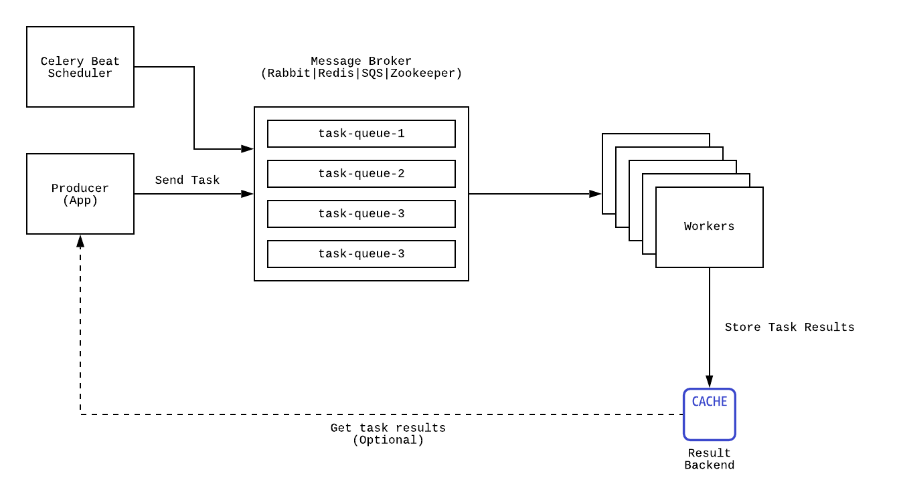

Task Query
üßÆ CPU
В этой главе мы рассмотрим механизмы оптимизации вычислений на сервере.
Скажем, у нас есть функция f(**kwargs) -> int, которая чисто случайно оказывается функцией BusyBeaver:
# views.py
...
@api_view(['POST']) # Some DRF magic
def bb_view(request: json):
iterations = busy_beaver(**request.get('states'))
logging.info(f"HALTED AFTER: {iterations}")
states, запрос к данному view может выполняться очень долго; и браузер выкинет таймаут. Что хуже, если все пользователи решат воспользоваться великолепной фичей вашего сайта, все воркеры обслуживающие клиентов также залипнут в ожидании завершения функции, что сделает любой запрос на наш сайт необслуживаемым. Хуже данной ситуации уже не может быть, поэтому давайте рассмотрим механизмы того как это можно исправить. Ну конечно же можно делегировать выполнение задач в дочерние потоки или процессы!
üé¢ Multiprocessing|Threading|Async
üßµ Threading
В Python дела с потоками обстоят не так просто. Виной всему является злощастный GIL [Global Interpreter Lock]. Он позволяет лишь одному потоку исполнять байткод. Это сделано из соображений простоты реализации интерпретатора и потокобезопасности. Многие, обычно сторонние от Python-сообщества программисты, слыша GIL начинают орать как гиены, что это замедляет Python, это жутко не удобно и т.п. Хотя, стоит отметить, что некоторых реализациях языка его попросту нет.
На самом деле, если понимать устройство лока, то можно использовать его по полной.
Трепищите, это GIL в референсной интепретации CPython:
static PyThread_type_lock interpreter_lock = 0; /* This is the GIL */
C. Сама спецификация языка указывает на еще 2 дополнительные перменные для менеджмента состояния gil_mutex и gil_cond с кучей макросов для их логики. Вы можете посмотреть сюда чтобы прочитать исходный код GIL'а. Для исполнения каждого потока мы должны сделать
acquire_gil, а исполняемый до этого поток должен сделать release_gil. Такой процесс происходит каждый раз когда мы исполняемся заданное количество времени или происходит блокирующий вызов.
Чтобы создать поток достаточно импортировать библиотеку threading. Давайте улучшим пример из Introduction.
1 2 3 4 5 6 7 8 9 10 11 12 13 14 15 16 17 18 19 20 21 | |
üìà concurent.futures
Цитируя умных людей
Raymond Hettinger
There's got to be a better way to do this!
Конечно стандартная библиотека Python растет и теперь у нас есть более приятный интерфейс для решения подобных задач: concurent.futures. Этот модуль является высокоуровневым интерфейсом для асинхронного исполнения функций.
1 2 3 4 5 6 7 8 9 10 11 12 13 14 15 16 17 18 19 20 21 22 23 24 25 26 27 28 | |
Но знаете что?
Raymond Hettinger
There's got to be a better way to do this!
Если вы отматаете на два примера вверх, то увидите, важную фразу, что смена исполнительного потока происходит при блокирующем вызове. Значит при каждом обращении к IO мы можем делигировать питону задачи, пока он будет ожидать ответа. Эта идея фундаментальна для осознания концепции асинхронных функций и конкурентного исполнения кода.
То о чем я пишу можно изобразить следующим образом:

üìû Async
Начиная с Python 3.5 в языке появились ключевые слова async/await, которые позволяют пользователю задавать в удобной форме воркфлоу.
```python linenums=1 import aiohttp import asyncio
async def send_request(url: str) -> bytes: return await requests.get(url).content
async def manage_requests(targets_file: str) -> List[bytes]: tasks = [] with open(target_file, "r") as f: for url in f: tasks.append(send_request(url)) responses = await asyncio.gather(*tasks) return responses
if name == 'main': loop = asyncio.get_event_loop() # We need to create an event_loop loop.run_until_complete(manage_requests())
Данный метод при каждом _await_ будет менять активный поток и делать следующую итерацию в цикле `event_loop`. Однако `requests` библиотека в терминах асинхронной парадигмы является __блокирующей__. Дело в том, что для максимально оптимального использования вызовов и жанглирования потоками, ваш код не должен содержать обыкновенных блокирующих вызовов, иначе, встретив такой вызов, поток просто встанет и будет ожидать завершения. Поэтому когда вы используете какие-либо библиотеки с AsyncIO, обязательно убедитесь, что она также поддерживает `async`/`await`.
Ну а теперь:
!!! quote "Raymond Hettinger"
There's got to be a better way to do this!
### üï∏ aiohttp
Одним из примеров неблокирующей библиотеки для работы с веб-запросами является aiohttp. Она обеспечит оптимальное исполнение кода в "неблокирующем" формате:
Сначала
```shell
pip install aiohttp
И затем
1 2 3 4 5 6 7 8 9 10 11 12 13 14 15 16 17 18 | |
multiprocessing
∥ Multiprocessing
Благодаря GIL, для достижения действительно параллельного кода, в Python используются процессы. Сразу же о плохом: значительные накладные росходы по сравнению с потоками, нет разделенной памяти между процессами. На сегодняшний день ведутся разработки по созданию суб-интерпретаторов для достижения параллельности с меньшими расходами, но это все еще в ранней стадии. Хотя в CPython уже есть API.
Давайте попробуем убрать блокировку нашего view из начала глава:
1 2 3 4 5 6 7 8 | |
Также есть удобный Pool интерфейс для создания множества процессов за раз. Например:
1 2 3 4 5 6 7 8 | |
Теперь наша задача будет считаться в абсолютно параллельном процессе. Однако стоит постоянно держать в голове, что потоки и процессы также несут накладные расходы на их создание, передачу результатов и т.п. Поэтому не стоит пытаться распараллелить абсолютно каждую задачу.
üí™ Celery
Конечно же, для параллельного вычисления есть решения и лучше! Если мы обслуживаем множество различных сложных запросов, то нам просто необходима централизованная система для мониторинга их исполнения и выстраивания очередей в соответствии с нагрузкой. Такой функционал предоставляет Celery.
Celery позволяет задать очень гибкую настройку под любую нагрузку! Архитектура выглядит следующим образом:

Приложение, при запросе, создает соответствующую задачу, которая отправляется в брокер, который постоянно читают celery воркеры. Как только находится сообщение с задачей в очереди, воркер начинает его исполнение, и при необходимости сохраняет результат, который приложение может получить уже через API результатов в celery.
В верхем-левом углу указан Scheduler, который занимается исполнением cron-like задач. Т.е. мы можем задать некоторую периодическую задачу, например, очистить бд каждый день в 3 часа ночи или каждую минуту отправить пинг стороннему сервису. Все это очень легко сделать с Celery, но сначала установка:
pip install Celery
либо можно подтянуть сразу зависимости к выбранному стеку:
pip install "celery[librabbitmq,redis,auth,msgpack]"
Celery
Я настоятельно рекомендую ознакомиться с официальной документацией, поскольку Celery умеет так много, что по нему нужно писать отдельную методичку. Подробнее тут
Для настройки создадим файл celery.py в корне proj, где лежит settings.py.
1 2 3 4 5 6 7 8 9 10 11 12 13 14 15 16 17 | |
Добавим это в __init__.py для того, чтобы клиент celery мог увидеть наши веб-приложения:
# This will make sure the app is always imported when
# Django starts so that shared_task will use this app.
from .celery import app as celery_app
__all__ = ('celery_app',)
Теперь внутри приложений можно задать отдельные задачи в tasks.py
- app1/
- tasks.py
- models.py
- app2/
- tasks.py
- models.py
Определим задачу из начала главы для Celery:
from typing import Dict
from my.proj import celery_app
@celery_app.task(name="bb_task")
def busy_beaver(instructions: Dict):
...# bb code
Отлично, теперь мы можем просто воспользоваться интерфейсом запуска задач на воркере -- delay. По своей сути это такой apply_async. Здесь подробнее об этом написано.
# views.py
...
@api_view(['POST']) # Some DRF magic
def bb_view(request: json):
busy_beaver.delay(**request.get('states')) # start the task
# logging.info(f"HALTED AFTER: {iterations}")
Results
Однако, мы не сможем увидеть результат(((
Для доступа к резльтатом необходимо дополнительно установить расширение
pip install django-celery-results
и добавить
# settings.py
INSTALLED_APPS = (
...,
'django_celery_results',
)
python manage.py migrate django_celery_results. Далее необходимо указать бэкенд для наших результатов, и здесь мы можем использовать старый-добрый кэш.
# celery setting.
CELERY_CACHE_BACKEND = 'default'
# django setting.
CACHES = {
'default': {
...
}
}
Scheduler
Этот пакет позволяет устанавливать расписание для задач. Для установки выполните pip install django-celery-beat.
Затем зарегестрируйте приложение в Django:
# settings.py
INSTALLED_APPS = (
...,
'django_celery_beat',
)
И наконец сделайте миграцию бд python manage.py migrate
Один из способов регистрации расписания -- указание в конфиге Celery приложения:
instructions = {...}
app.conf.beat_schedule = {
'bb-every-30-seconds': {
'task': 'proj.tasks.bb_task', # path to the function through the module tree
'schedule': 30.0,
'args': (**instructions)
},
}
app.conf.timezone = 'UTC'
Boot
Наконец, чтобы запустить воркер Celery, достаточно написать в терминале: celery -A proj worker -l INFO. -b Добавит к воркерам scheduler, который сможет мониторить расписание задач.